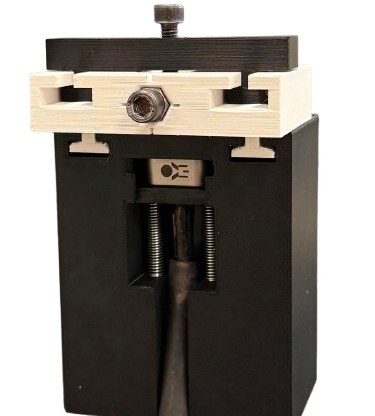
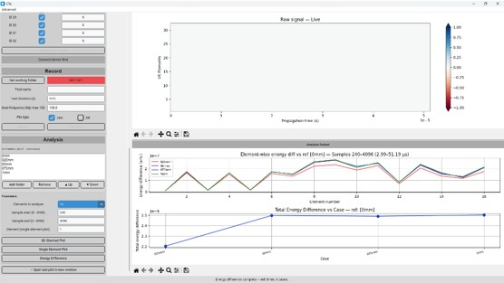
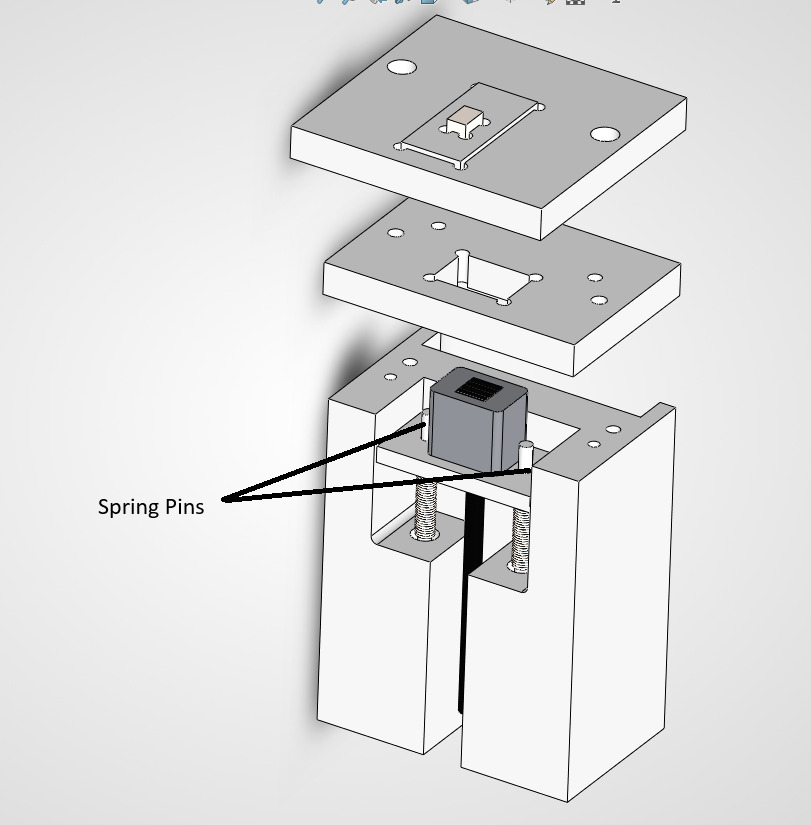

My master's thesis develops a non-invasive way to monitor what happens at the tool–chip interface during metal cutting, using phased array ultrasonics. I designed the instrumented fixture in SolidWorks and iterated it from 3D-printed prototypes to a metal build, simulated the acoustic behaviour in ABAQUS, and wrote US-Explorer — a complete Python data acquisition and analysis interface for the phased array controller. View the code on GitHub.


